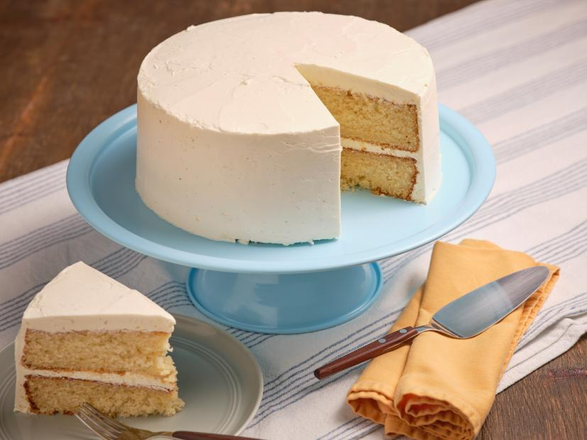

Vanilla Cake

Description:
We talked about spaghetti cake, now for the actual cake we've been thinking about.
Sweet and yummy, in everyone's tummy. Layers of frosting and fluff to indulge your
tastebuds when you're ready to splurge.
Cook Time: 1 hr
Additional Time: 3 hrs
Total Time: 4 hrs
Servings: 10
Ingredients:
- Nonstick baking spray
- 3 ½ cups all-purpose flour
- 2 tablespoons cornstarch
- 2 teaspoons baking powder
- 2 teaspoons kosher salt
- 1 teaspoon baking soda
- 2 sticks (6 tablespoons) unsalted butter, at room temperature
- 2 cups granulated sugar
- 3 tablespoons vegetable oil
- 1 tablespoon pure vanilla extract
- 3 large eggs, at room temperature
- 2 large egg yolks, at room temperature
- 2 cups buttermilk
- Frosting: Your favorite store bought frosting
Directions:
- Gather all ingredients.
- For the cake: Arrange a rack in the center of the oven and preheat to
350 degrees F. Lightly coat two 9-inch cake pans with nonstick cooking
spray. Line the bottoms with parchment paper rounds; lightly coat the paper
with nonstick spray.
- Whisk together the flour, cornstarch, baking powder, salt and baking soda in
a large bowl until combined. Beat the butter, granulated sugar, oil and
vanilla with an electric mixer on medium-high speed until light and fluffy,
3 to 4 minutes. Add the eggs and yolks one at a time, beating to blend
between additions and occasionally scraping down the sides and bottom of
the bowl until the batter is completely combined, smooth and creamy. With
the mixer on low, add the dry ingredients in 3 additions, alternating
with the buttermilk, beginning and ending with the dry ingredients.
- Scrape the batter evenly into the prepared pans. Smooth the tops. Bake,
rotating the pans from left to right halfway through, until the cakes are
a light golden brown and a tester inserted into the centers comes out clean,
35 to 45 minutes. Transfer the pans to a wire rack and let the cakes cool for
30 minutes. Run a knife around the sides of the cakes and invert onto the wire
rack. Remove the parchment and let the cakes cool completely.
- To assemble the cake: Place one cake, domed-side down, on a platter.
Spread 1 1/2 cups of the frosting evenly over the top. Place the remaining
cake, domed-side up, on top. Spread the top with 1 ½ cups of the frosting. Frost
the sides of the cake with 1 ½ cups of the frosting and smooth out completely
to make an even crumb coat. (It's ok if some of the cake shows through. This is
just a base layer.) Refrigerate for 30 minutes to let the frosting set.
- Spread the remaining frosting over the top and sides, smoothing it out.
Nutrition Facts:
(per serving)
| Calories | 1282 |
| Fat | 84g |
| Carbs | 126g |
| Protein | 10g |